Про мене:
Перші два сайти створила на конструкторі UCOZ ще у 2014 році, тривалий час займалась їх підтримкою, розвитком та наповненням, після чого всерйоз зацікавилась фронт-енд розробкою й вирішила професійно розвиватися саме в цій галузі.
Закінчила курси Front-end в DAN-IT, де здобула знання про принципи та практики розробки адаптивних веб-сайтів, які працюють на різних пристроях (комп'ютери, планшети, смартфони), а також набула досвід командної роботи над проектами (в тому числі з Trello) та навчилася працювати із системою контролю версій Git для спільної роботи над проектами та керування змінами в коді.
Маю гарні комунікаційні навички, вмію аналізувати проблеми та знаходити ефективні рішення, відповідально ставлюсь до дотримання термінів дедлайнів.
Основний стек:
- HTML5
- CSS3
- SCSS
- Javascript ES6+
- jQuery
- Bootsrap
- GULP
- React.js
- Redux
- Material UI
- Git
- Node.js
- AJAX
- Formik and Yup
також володію методологією БЕМ, OOP, маю досвід адаптивної верстки, верстки на основі макетів Figma.
Цей сайт-візитка виконаний із використанням Bootstrap, решту робіт можна переглянути в GitLab та GitHub.
Проекти:
- Сайт бази відпочинку https://mriya-arsenalets.vercel.app написаний на HTML5, з використанням Bootstrap (це сайт реальної бази відпочинку ОПРЦ "Мрія", виконаний на замовлення та внесений в пошуковик Google)
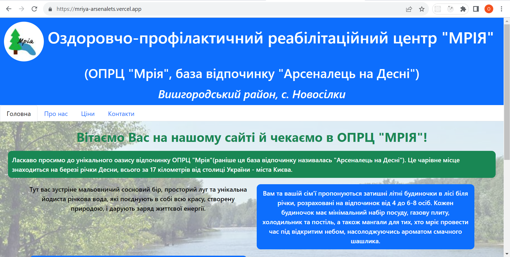
 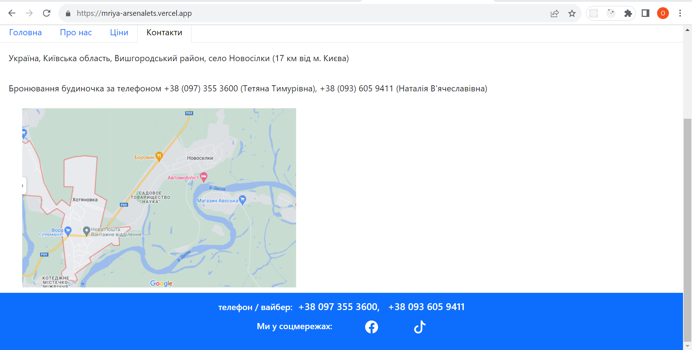
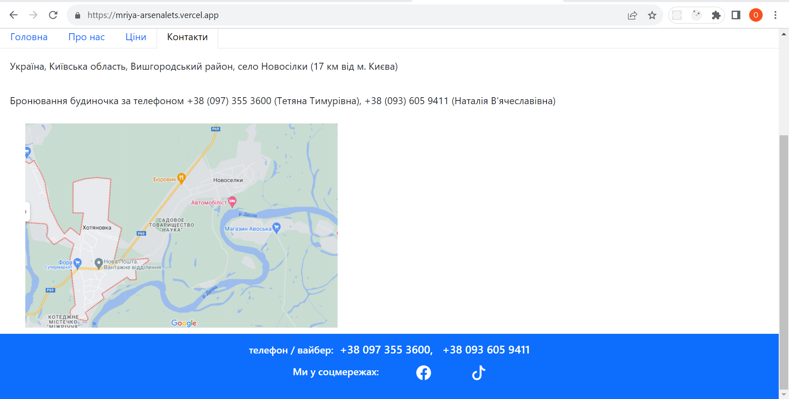
- Сайт-візитка на конструкторі Wix https://evakuatord99.wixsite.com/evakuator був зроблений на замовлення для реклами послуг евакуатора
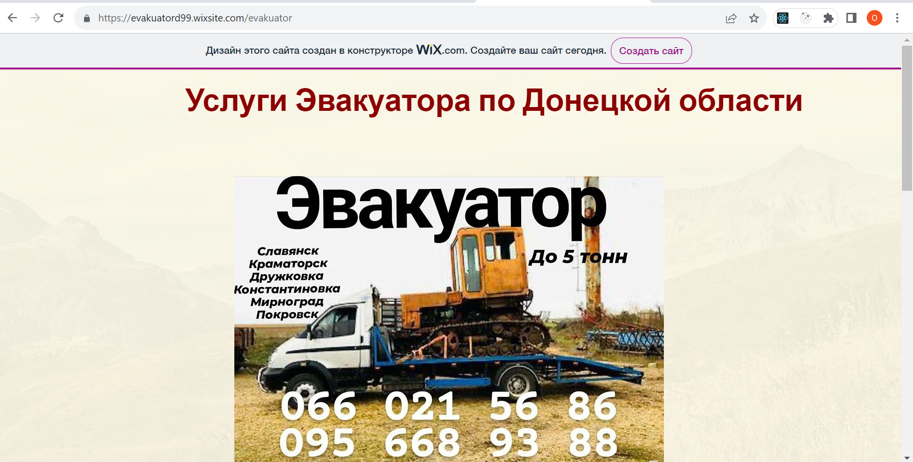
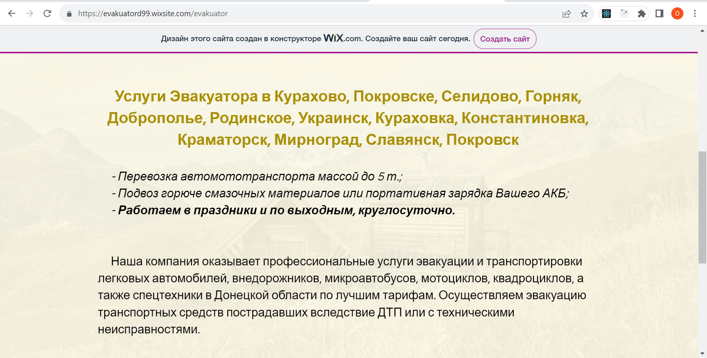
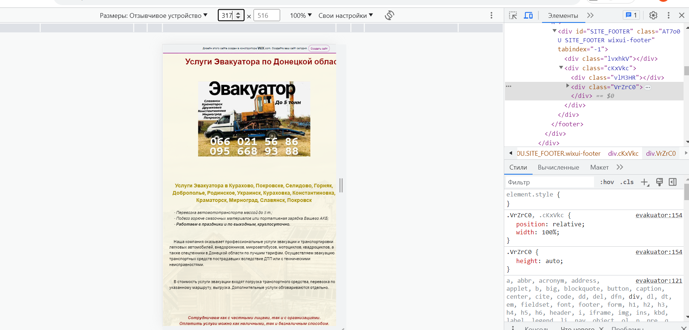
- "Медична картка" (дані для тестування додатку e-mail: bekhtir@ukr.net, password: 123) написаний на JavaScript, HTML5, CSS3
- "Інтернет-магазин" написаний в React на Typescript з використанням Redux Toolkit
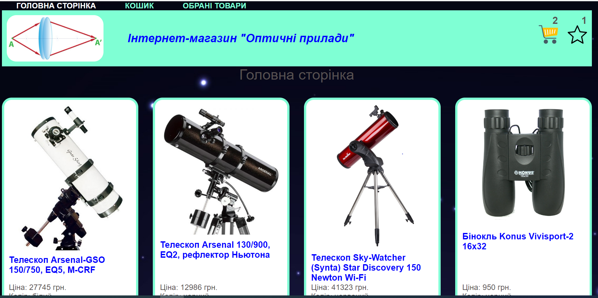
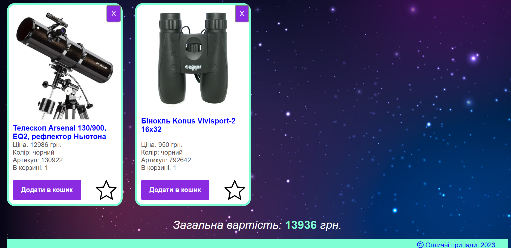

-
"Соціальна мережа" написана в React на JavaScript з використанням React Routing та Redux.
Це була командна робота, я в цьому проекті робила:
- розгортання front-end частини проекту в середовищі vite.js
- Sidebar & Private routing:
- верстка десктопної, планшетної та мобільної версій
- верстка випадаючого дроп-меню на мобільній версії
- створення роутингу та налаштування приватного роутингу
- прив’язка сайдбару до роутингу (sidebar, connect with routing)
- Themes (Create default MUI theme with customizing modal):
- створення трьох тем сайту (світлої - Default, темної - Dim та чорної - Lights Out)
- верстка модального вікна для зміни тем та налаштування можливості зміни теми та кольору кнопок
- підключення зміни тем до всіх сторінок та низки модальних вікон (вікно, яке відповідає за зміну тем, випадаюче дроп-меню на мобільній версії, модальне вікно для створення та відправки твіта, модальне вікно для корегування профілю юзера з додатковими модалками до нього)
- Tweet form (with modal):
- верстка модального вікна для створення та відправки твіта
- верстка мобільної версії твіт-форми
- Connect tweet form with create tweet endpoint:
- налаштування створення та відправки твіта (з картинками та без)
- Profile page (with update user modal):
- верстка сторінки профілю юзера
- верстка модального вікна EditProfileUser та додаткових модальних вікон для зміни BirthDate
- сonnect Profile Page & Modal Edit User with create user endpoint
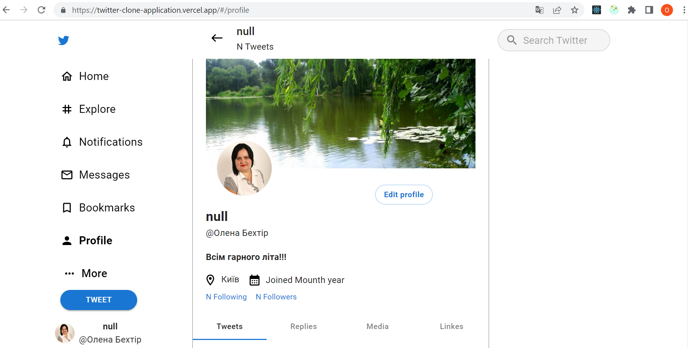
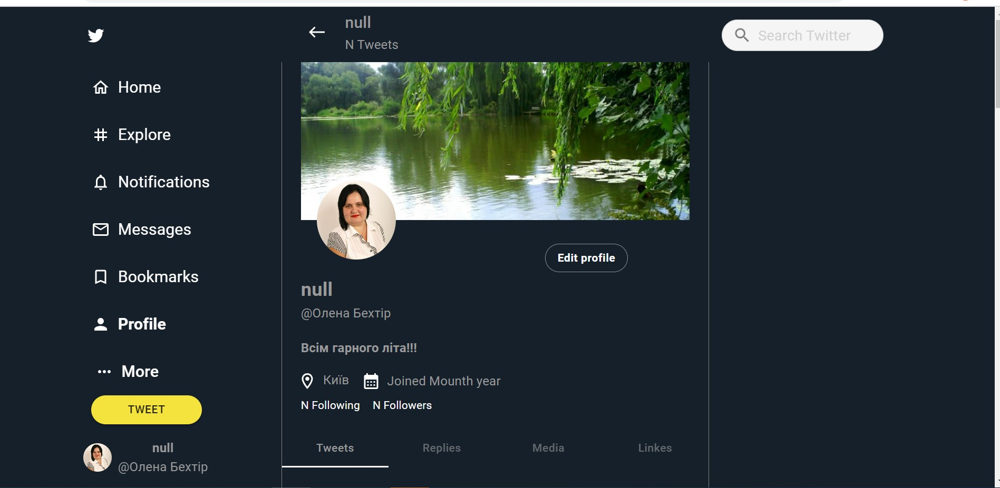
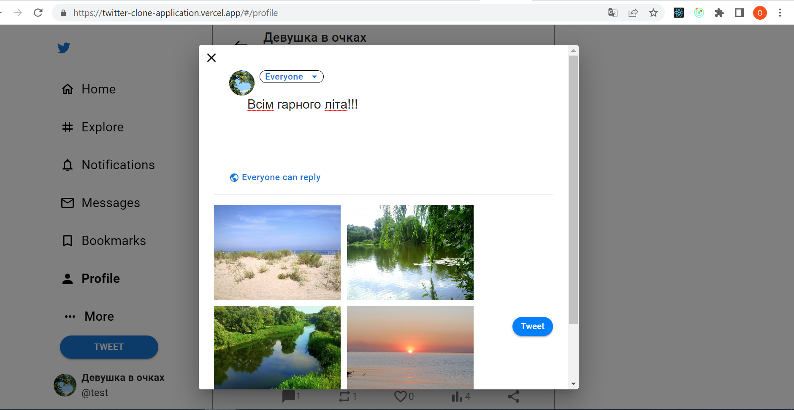
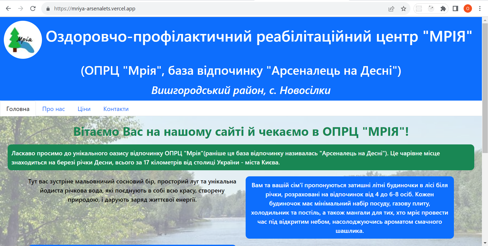
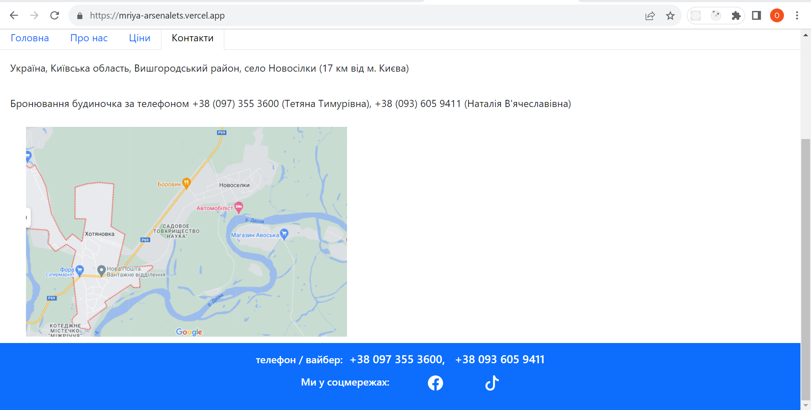
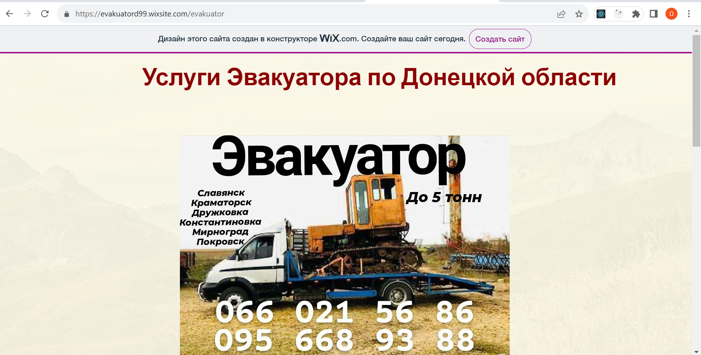
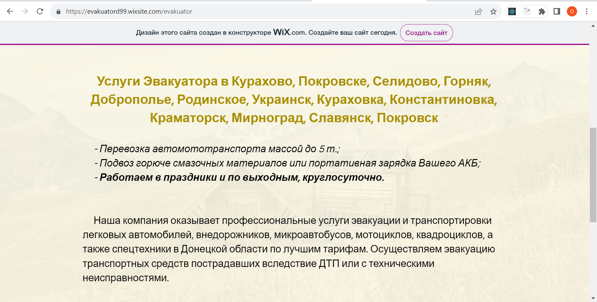
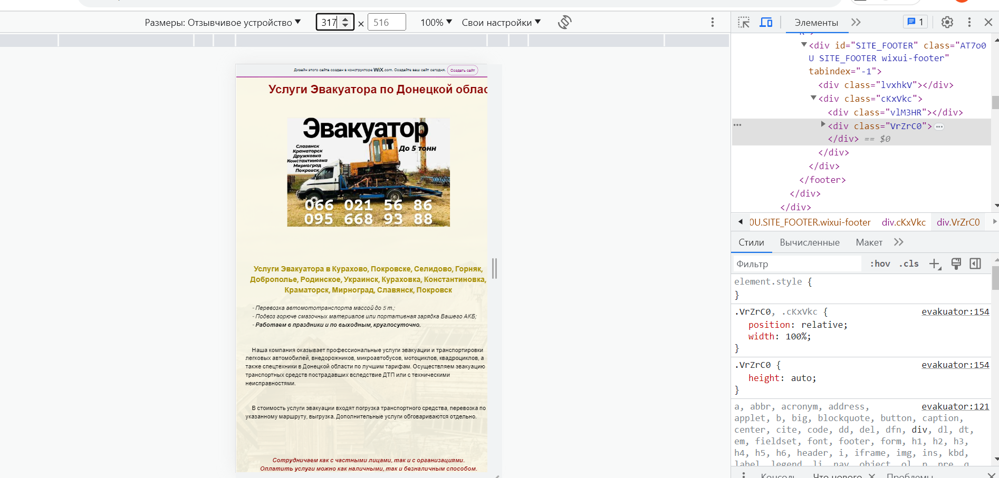
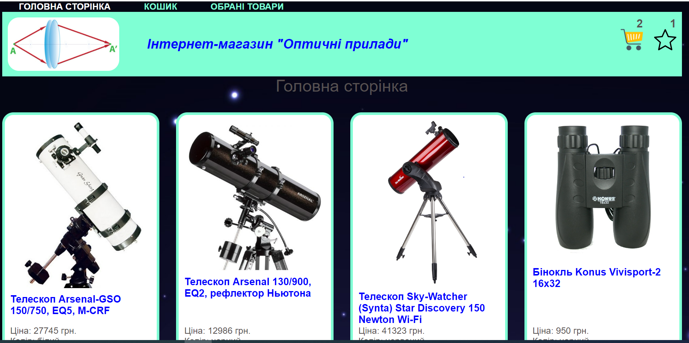
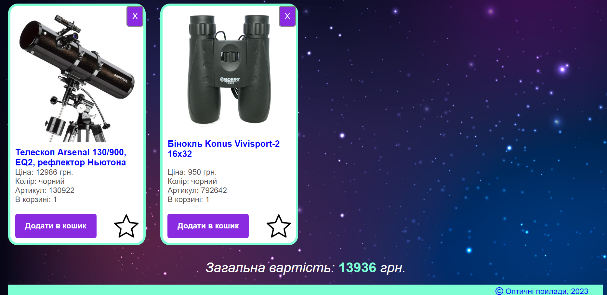
Це була командна робота, я в цьому проекті робила:
- розгортання front-end частини проекту в середовищі vite.js
- Sidebar & Private routing:
- верстка десктопної, планшетної та мобільної версій
- верстка випадаючого дроп-меню на мобільній версії
- створення роутингу та налаштування приватного роутингу
- прив’язка сайдбару до роутингу (sidebar, connect with routing)
- Themes (Create default MUI theme with customizing modal):
- створення трьох тем сайту (світлої - Default, темної - Dim та чорної - Lights Out)
- верстка модального вікна для зміни тем та налаштування можливості зміни теми та кольору кнопок
- підключення зміни тем до всіх сторінок та низки модальних вікон (вікно, яке відповідає за зміну тем, випадаюче дроп-меню на мобільній версії, модальне вікно для створення та відправки твіта, модальне вікно для корегування профілю юзера з додатковими модалками до нього)
- Tweet form (with modal):
- верстка модального вікна для створення та відправки твіта
- верстка мобільної версії твіт-форми
- Connect tweet form with create tweet endpoint:
- налаштування створення та відправки твіта (з картинками та без)
- Profile page (with update user modal):
- верстка сторінки профілю юзера
- верстка модального вікна EditProfileUser та додаткових модальних вікон для зміни BirthDate
- сonnect Profile Page & Modal Edit User with create user endpoint
- верстка десктопної, планшетної та мобільної версій
- верстка випадаючого дроп-меню на мобільній версії
- створення роутингу та налаштування приватного роутингу
- прив’язка сайдбару до роутингу (sidebar, connect with routing)
- створення трьох тем сайту (світлої - Default, темної - Dim та чорної - Lights Out)
- верстка модального вікна для зміни тем та налаштування можливості зміни теми та кольору кнопок
- підключення зміни тем до всіх сторінок та низки модальних вікон (вікно, яке відповідає за зміну тем, випадаюче дроп-меню на мобільній версії, модальне вікно для створення та відправки твіта, модальне вікно для корегування профілю юзера з додатковими модалками до нього)
- верстка модального вікна для створення та відправки твіта
- верстка мобільної версії твіт-форми
- налаштування створення та відправки твіта (з картинками та без)
- верстка сторінки профілю юзера
- верстка модального вікна EditProfileUser та додаткових модальних вікон для зміни BirthDate
- сonnect Profile Page & Modal Edit User with create user endpoint
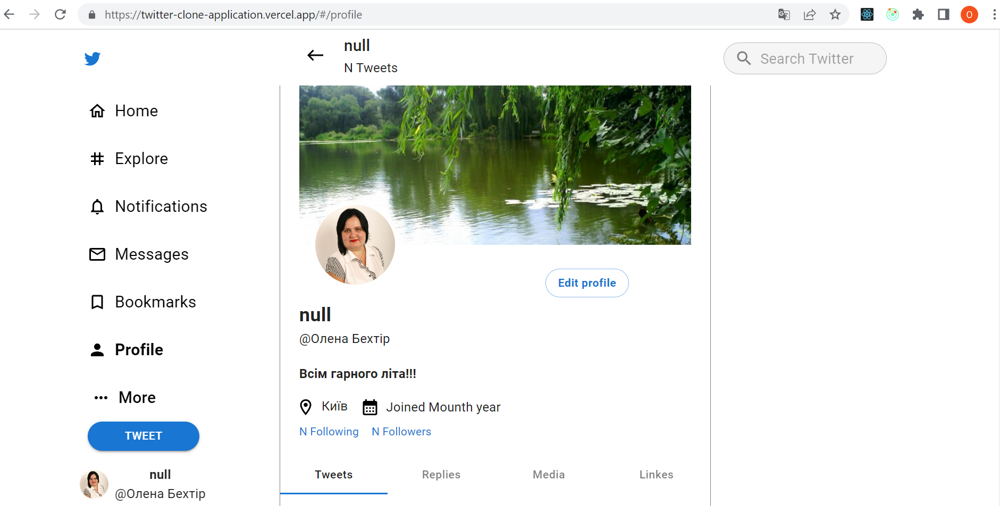
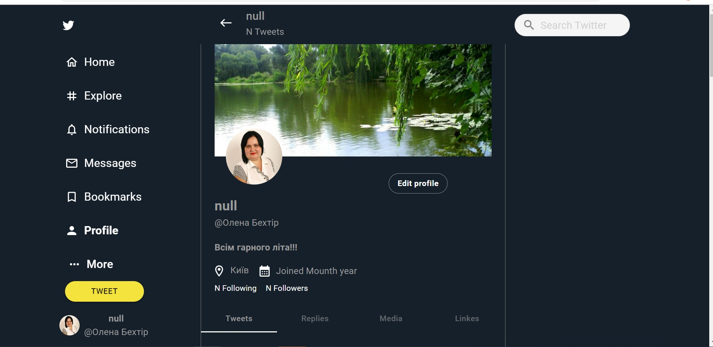
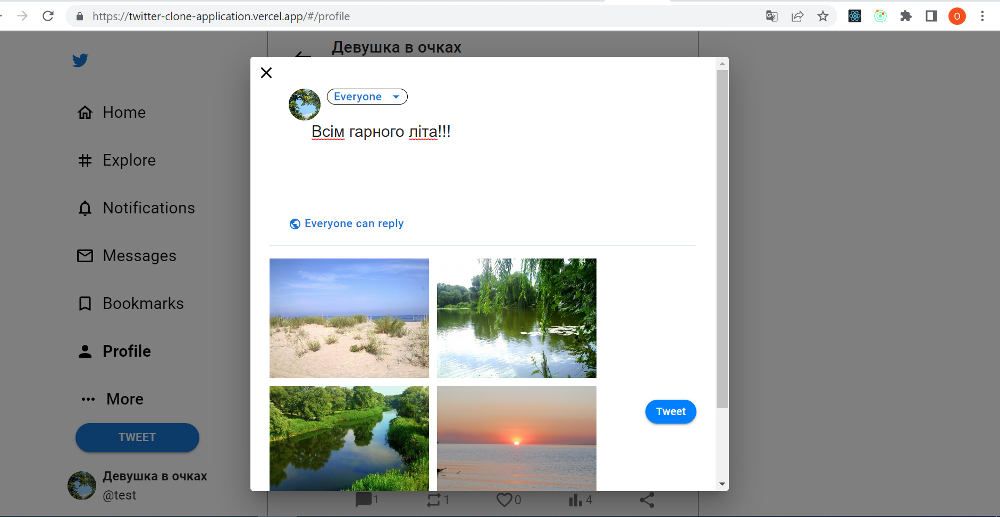
Односторінковий сайт без адаптиву
HTML5, CSS3, JS, jQuery (карусель), плагін Masonry (останній блок з картинками)
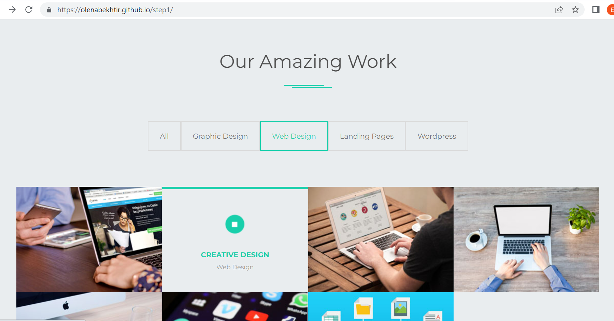 Перейти
Односторінковий сайт з адаптивом
HTML5, JS, SCSS, GULP, командна робота GitLab, використана методологія БЕМ, медіа-запити для адаптивної верстки (адаптивна верстка first-mobile)
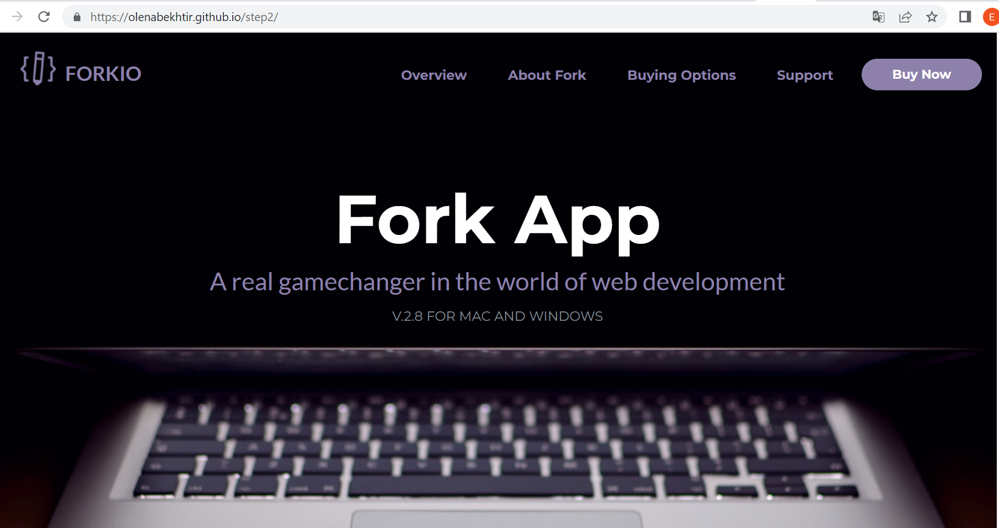 Перейти
Односторінковий сайт з адаптивом
HTML5, JS, SCSS, GULP (збирання проекту), методологія БЕМ, медіа-запити, міксини
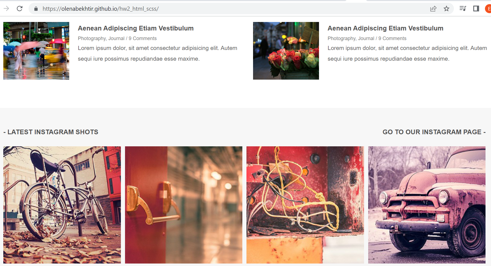 Перейти
Багатосторінковий сайт
Конструктор сайтів UCOZ (створила сайт та наповнила його контентом)
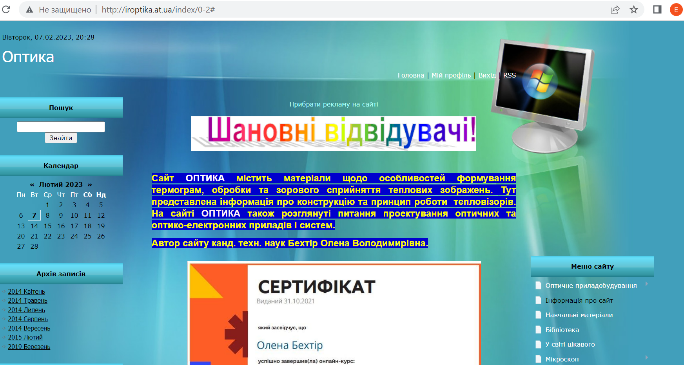 Перейти
Багатосторінковий сайт
Конструктор сайтів UCOZ (створила сайт та наповнила його контентом)
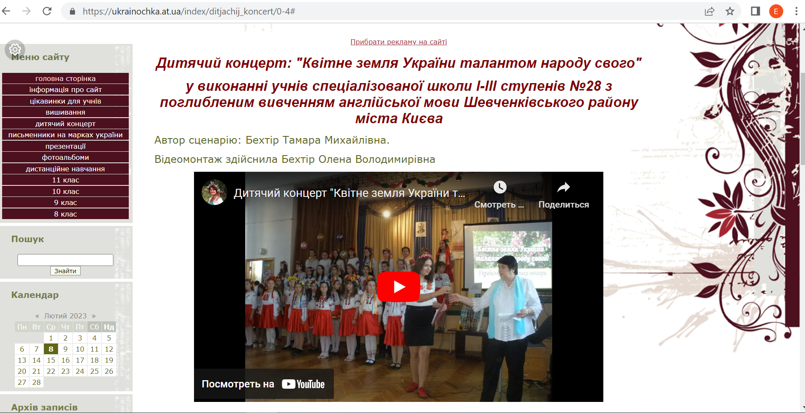 Перейти
Проект "Медична картка"
HTML5, CSS3, JS, AJAX (методи POST, PUT, GET, DELETE, fetch-запити), OOP, ES6
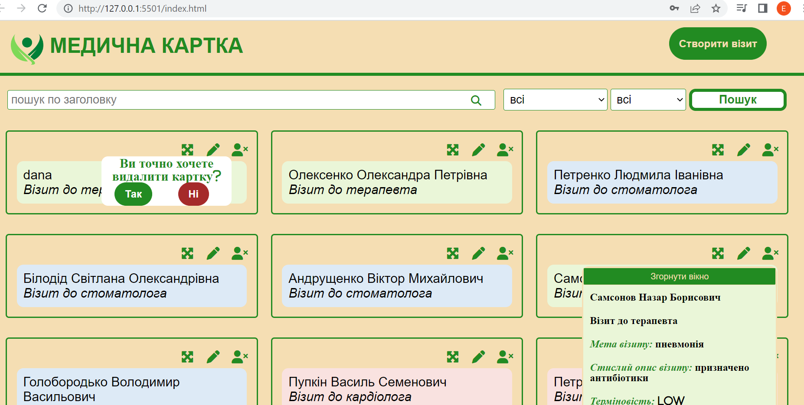 Переглянути на гітлаб
2022-2023 роки DAN-IT. Курси Front End (HTML (5), CSS (3), JavaScript, jQuery, Culp, адаптивна верстка, SCSS, AJAX, Bootstrap, GIT, OOP, ES6-модулі, React, Redux, Material UI, Node.js, Formik and Yup)
2022 рік Дистанційний курс: «Основи Web UI розробки 2022» через платформу Prometheus
2018 рік "Цитрус Академія" (ROBO.HOUSE — дім роботів) - курси підвищення кваліфікації з робототехніки та програмування штучного інтелекту (програмування на Python)
2012 рік "УКРСТЕНО" — курси підвищення кваліфікації "Реклама, поліграфія та веб-дизайн" (Adobe Illustrator, Adobe Photoshop, Flash Macromedia)
2006 рік Захистила дисертацію та здобула науковий ступінь кандидата технічних наук за спеціальністю "Оптоелектронні системи"
1994-2000 роки Навчалась в Національному технічному університеті України "Київський політехнічний інститут" за спеціальністю "Лазерна та оптоелектронна техніка". У 2000 році отримала диплом з відзнакою інженера оптика-конструктора
2022 рік Дистанційний курс: «Основи Web UI розробки 2022» через платформу Prometheus
2018 рік "Цитрус Академія" (ROBO.HOUSE — дім роботів) - курси підвищення кваліфікації з робототехніки та програмування штучного інтелекту (програмування на Python)
2012 рік "УКРСТЕНО" — курси підвищення кваліфікації "Реклама, поліграфія та веб-дизайн" (Adobe Illustrator, Adobe Photoshop, Flash Macromedia)
2006 рік Захистила дисертацію та здобула науковий ступінь кандидата технічних наук за спеціальністю "Оптоелектронні системи"
1994-2000 роки Навчалась в Національному технічному університеті України "Київський політехнічний інститут" за спеціальністю "Лазерна та оптоелектронна техніка". У 2000 році отримала диплом з відзнакою інженера оптика-конструктора
березень 2023 - нині Працюю викладачем фізики та астрономії в Київському професійному коледжі сфери послуг. Беру замовлення на фрілансі по створенню сайтів (фронт-енд) та рерайтингу/копірайтингу
2019-2022 роки Працювала викладачем фізики та астрономії в ДНЗ "КРВПУБ" Дистанційне навчання здійснювала за допомогою власного сайту https://iroptika.at.ua, а також на платформі ClassRoom, проводила онлайн-зустрічі у GoogleMeet, Zoom, розробила низку тренувальних та контрольних тестів за допомогою Google форм, ілюстративний матеріал готувала із використанням ресурсу Canva, розробила та розмістила на ресурсі https://quizizz.com такі вікторини: "Електричне поле та електричний струм", "Природа світла", "Інтерференція та дифракція світла". Мною також були розроблені презентації та опорні конспекти (теми: оптика, квантова та ядерна фізика, астрономія), які були апробовані в навчальному закладі «Атмосферна школа» (договір № 14-12/1П від 14.12.2020)
2013-2019 роки Викладала спеціальні оптичні дисципліни в Оптико-механічному коледжі Київського національного університету імені Тараса Шевченка. Викладала такі спеціальні оптичні дисципліни: "Оптичні вимірювання”, “Системи телекомунікацій та розподіл інформації", "Сучасні методи дослідження оптичних матеріалів", "Комп’ютерна обробка зображень", "Методи і засоби комп’ютерних інформаційних технологій в оптотехніці", проводила практику на ЕОМ (MS Office: Word, Excel, PowerPoint, оптичні програми)
2008-2012 роки Державне підприємство “Поліграфічний комбінат "Україна" (посада: головний фахівець у інженерній службі). Працювала з різною технічною документацією, а також із договорами на закупівлю робіт та послуг, необхідних для надійної та безперебійної роботи виробничого обладнання (закупівля та обслуговування електричного та енергетичного обладнання, ремонт та модернізація існуючого поліграфічного обладнання тощо)
2005–2008 роки Державний департамент з питань зв’язку та інформатизації Міністерства транспорту та зв’язку України (посада: головний спеціаліст). Брала участь у формуванні та реалізації Національної програми інформатизації України, зокрема, займалася питаннями створення інформаційно-аналітичних телекомунікаційних систем для телемедицини, впровадженням електронного цифрового підпису, виконувала супроводження договорів на виконання робіт за різними проектами інформатизації
2002-2005 роки Інститут фізики напівпровідників НАН України (посада: в.о. м.н.с., аспірантка). Займалася створенням та вдосконаленням програмного забезпечення для тепловізійного пристрою в частині обробки зображень. Здійснювала розрахунки оптичного тракту тепловізійної системи з одноелементним фотоприймачем та лінійкою фотоприймачів (фотоприймач на базі КРТ)
2000-2002 роки Казенне підприємство «Центральне конструкторське бюро «Арсенал» (посада: інженер-конструктор). Проектування та розрахунок оптичних систем, обробка зображень програмними засобами. Підготовка конструкторської та нормативно-технічної документації
2019-2022 роки Працювала викладачем фізики та астрономії в ДНЗ "КРВПУБ" Дистанційне навчання здійснювала за допомогою власного сайту https://iroptika.at.ua, а також на платформі ClassRoom, проводила онлайн-зустрічі у GoogleMeet, Zoom, розробила низку тренувальних та контрольних тестів за допомогою Google форм, ілюстративний матеріал готувала із використанням ресурсу Canva, розробила та розмістила на ресурсі https://quizizz.com такі вікторини: "Електричне поле та електричний струм", "Природа світла", "Інтерференція та дифракція світла". Мною також були розроблені презентації та опорні конспекти (теми: оптика, квантова та ядерна фізика, астрономія), які були апробовані в навчальному закладі «Атмосферна школа» (договір № 14-12/1П від 14.12.2020)
2013-2019 роки Викладала спеціальні оптичні дисципліни в Оптико-механічному коледжі Київського національного університету імені Тараса Шевченка. Викладала такі спеціальні оптичні дисципліни: "Оптичні вимірювання”, “Системи телекомунікацій та розподіл інформації", "Сучасні методи дослідження оптичних матеріалів", "Комп’ютерна обробка зображень", "Методи і засоби комп’ютерних інформаційних технологій в оптотехніці", проводила практику на ЕОМ (MS Office: Word, Excel, PowerPoint, оптичні програми)
2008-2012 роки Державне підприємство “Поліграфічний комбінат "Україна" (посада: головний фахівець у інженерній службі). Працювала з різною технічною документацією, а також із договорами на закупівлю робіт та послуг, необхідних для надійної та безперебійної роботи виробничого обладнання (закупівля та обслуговування електричного та енергетичного обладнання, ремонт та модернізація існуючого поліграфічного обладнання тощо)
2005–2008 роки Державний департамент з питань зв’язку та інформатизації Міністерства транспорту та зв’язку України (посада: головний спеціаліст). Брала участь у формуванні та реалізації Національної програми інформатизації України, зокрема, займалася питаннями створення інформаційно-аналітичних телекомунікаційних систем для телемедицини, впровадженням електронного цифрового підпису, виконувала супроводження договорів на виконання робіт за різними проектами інформатизації
2002-2005 роки Інститут фізики напівпровідників НАН України (посада: в.о. м.н.с., аспірантка). Займалася створенням та вдосконаленням програмного забезпечення для тепловізійного пристрою в частині обробки зображень. Здійснювала розрахунки оптичного тракту тепловізійної системи з одноелементним фотоприймачем та лінійкою фотоприймачів (фотоприймач на базі КРТ)
2000-2002 роки Казенне підприємство «Центральне конструкторське бюро «Арсенал» (посада: інженер-конструктор). Проектування та розрахунок оптичних систем, обробка зображень програмними засобами. Підготовка конструкторської та нормативно-технічної документації